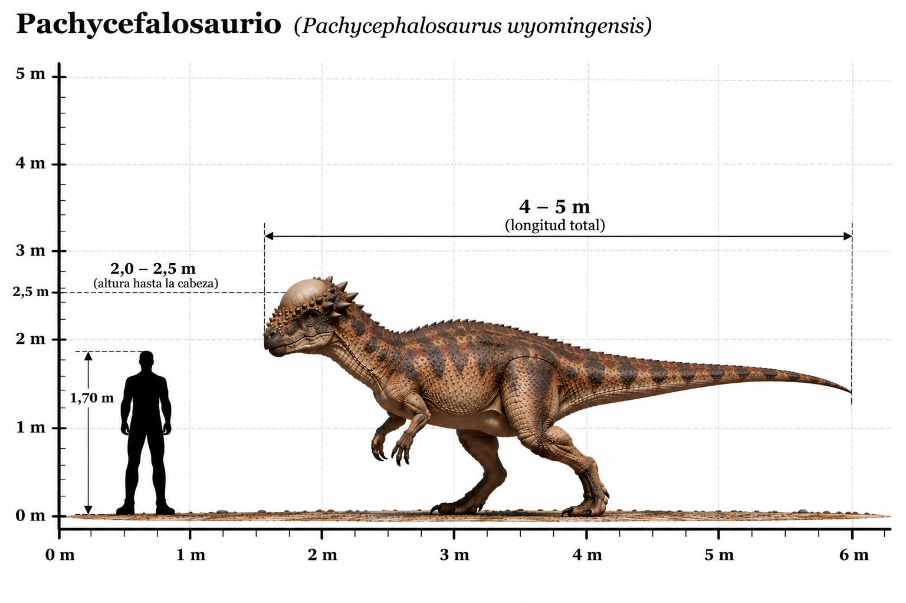

Pachycephalosaurus wyomingensis

El Pachycephalosaurus wyomingensis fue un dinosaurio ornitisquio que habitó América del Norte durante el Cretácico tardío, hace aproximadamente entre 68 y 66 millones de años. Su nombre significa "lagarto de cabeza gruesa", en referencia a su característica más distintiva: un enorme domo óseo situado en la parte superior del cráneo. Este domo podía alcanzar un grosor superior a los 20 centímetros y estaba rodeado por pequeñas protuberancias y espinas óseas. Durante mucho tiempo se ha planteado que los paquicefalosaurios podían utilizar sus gruesos cráneos para golpearse entre sí, de manera semejante a algunos mamíferos actuales. Sin embargo, esta hipótesis continúa siendo objeto de debate. También se han propuesto funciones relacionadas con la exhibición y el reconocimiento entre individuos. Poseía un cuerpo relativamente robusto, extremidades posteriores largas, brazos cortos y una cola que contribuía a mantener el equilibrio durante la locomoción bípeda. Su alimentación no se conoce con certeza, aunque generalmente se considera que consumía principalmente vegetación y posiblemente pequeños animales.
- Grupo: Paquicefalosaurio (ornitisquio).
- Familia: Pachycephalosauridae (paquicefalosáuridos).
- Período: Cretácico tardío (hace aproximadamente 68–66 millones de años).
- Alimentación: Probablemente herbívoro u omnívoro.
- Longitud: Aproximadamente 4–5 metros.
- Altura: Aproximadamente 1,5 metros hasta la cadera.
- Localización: América del Norte (actual Estados Unidos).
